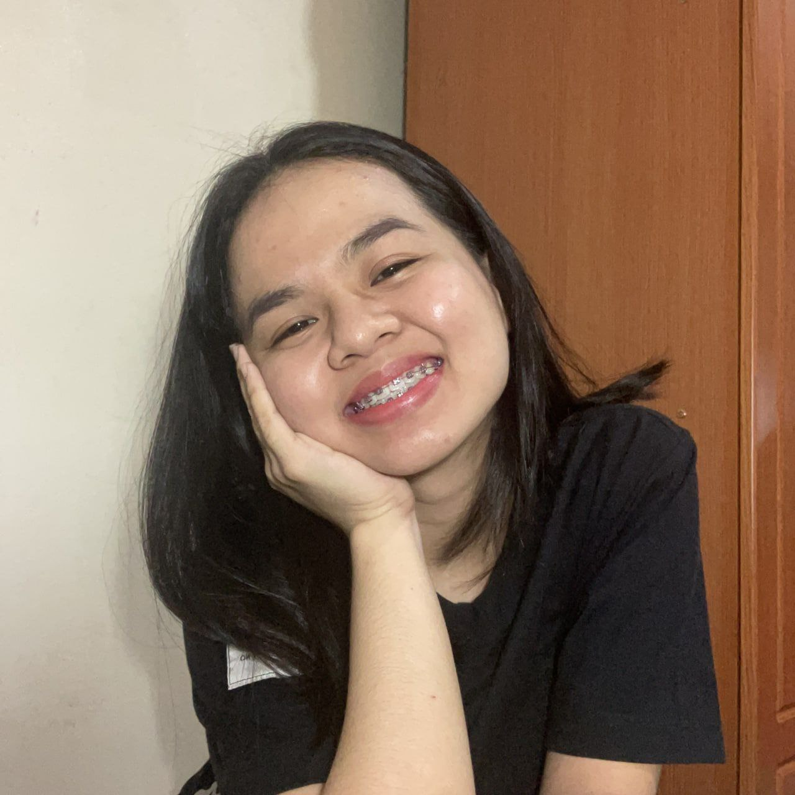

VIRAY, GERALDINE MARIE M.
NICKNAME: Ger

FAVORITE CMSC SUBJECT
My favorite is CMSC 56 or the Discrete Mathematical Structures in Computer Science I.
This because I had fun solving logic, boolean algebra, and linear algebra. I also had
the chance to teach this subject to freshmen students and others who wanted to take
CMSC 56 that is why this is also the most familiar CMSC subject for me. Though I took
this online, I still enjoyed it.
FAVORITE GE SUBJECT
My favorite General Education (GE) course is probably Ethics 1. I also took this GE
subject online. I expected this subject to have a lot of readings and essays but the
instructor made the workload light. He also prepared a study material that we could
browse and read that has brief discussion of the topics and his drawings. I enjoyed
the subject because it made me see things differently. From that GE subject, I now
value things in my life more.
FAVORITE PL
My favorite programming language so far is Java because of the project in CMSC 22.
Though I had difficulties at times in creating the project, I still had fun in
exploring GUI. I also like Java because it can be used in developing and designing
applications, which are works that I am considering on pursuing after college.
For me, it is also easier to code in Java using OOP because of its main principles.
FAVORITE FOOD
My favorite food is chicken curry because I love how it can seem like a complex dish but
it is easy to cook. This is also my comfort food especially when it is eaten with hot rice.
Chicken curry is also one of the first dishes that my mother taught me when I was a kid.